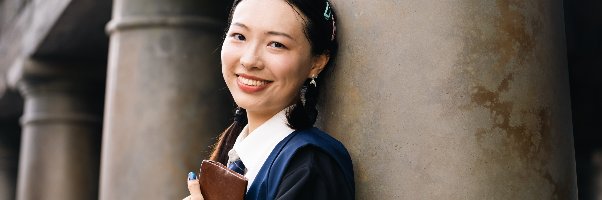

Sobre mí
¡Hola! Soy Jun Xu, estudiante de último año en el Doble Grado de Farmacia y Biotecnología en la Universidad CEU San Pablo, en Madrid. Desde pequeña, siempre he sentido una gran curiosidad por entender cómo la ciencia puede mejorar nuestras vidas, y esa pasión me ha guiado hasta donde estoy hoy.
Durante mi formación, he tenido la oportunidad de trabajar en proyectos fascinantes en el área de Inmunología, donde he aprendido a manejar cultivos celulares y explorar los efectos de distintos medicamentos. Estas experiencias no solo han ampliado mis conocimientos científicos, sino que también han reforzado mi amor por la investigación y la búsqueda de soluciones innovadoras.
Además de mi desarrollo académico, he asumido roles de liderazgo que me han ayudado a crecer como persona. Fui presidenta del Club del Hilo, donde promoví la creatividad y el trabajo en equipo, y también delegada de clase, un rol que me permitió ser el puente entre estudiantes y profesores. Como Embajadora Digital CEU, he contribuido a la transformación tecnológica dentro de mi universidad, una experiencia que ha sido increíblemente enriquecedora.
Otra parte importante de mi vida es mi compromiso con la sociedad. Como voluntaria en la Cruz Roja Española, he trabajado en campañas de salud pública, adherencia terapéutica y vacunación, lo que me ha permitido conectar con diferentes comunidades y ayudar a las personas de manera directa.
En mi tiempo libre, disfruto explorando mi lado creativo a través de la pintura, el diseño y la cultura tradicional china, que es una parte fundamental de mi identidad. Además, domino el español, el inglés y el chino, lo que me permite comunicarme y conectar con personas de diferentes culturas.
Creo firmemente que la combinación de la farmacia y la biotecnología tiene un enorme potencial para transformar la salud global. Mi objetivo es seguir aprendiendo, innovando y colaborando en proyectos que generen un impacto positivo en la sociedad.
"Nada en la vida debe ser temido, solo comprendido. Ahora es el momento de comprender más, para temer menos."
— Marie Curie